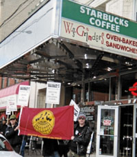

Black Friday and the importance of having a voice on the job
Submitted on Sat, 11/27/2010 - 2:48pm
The government won’t do it. CEOs won’t do it. Only working people can build a better future
By By Stephanie Basile - New York City Indymedia, November 25, 2010
Every Thanksgiving I remind my friends and family of the deadly war waged against Native Americans in this country. This Thanksgiving, there is another war I’d like to discuss: the war being waged against retail workers.
This year I call on progressives to not only speak up for native people, but to remind our friends and family how important it is that workers have the right to organize for better conditions at work. And there’s no better time to discuss this than Black Friday, the biggest shopping day of the year.
A CULTURE OF NEGLIGENCE
The Occupational Safety and Health Administration (OSHA) recently sent letters to 14 major retailers urging them to adopt crowd control measures this Black Friday.
It would almost sound serious if one had no idea how impotent OSHA is and how powerful the big box retailers are. Yes, I’m sure OSHA’s “strongly worded letter” has CEOs shaking in their booties!
In fact, it would be downright comical if it wasn’t for the fact that lives have literally been lost because of retailers’ utter disregard for their employees’ and customers’ safety.
We all remember the tragic story: Two years ago 34-year-old Jdimytai Damour, a temporary Wal-Mart maintenance worker, was trampled to death and four were injured at a Long Island Wal-Mart on Black Friday.
The bloggers and commentators used the event to lament just how crazy our consumer culture has become. While it’s tempting to comment on our frenzied consumer culture, the crowd basically did what any large crowd would do. News reports described a crowd of at least 200 people waiting outside one set of doors for the store’s 5am opening. Predictably, when the store opened, people bum rushed the entrance. And when 200+ eager customers are waiting to enter one set of doors at five o’clock in the morning on Black Friday, it’s going to be difficult, to say the least.
What’s amazing about this situation isn’t how the customers acted, but that they bore the brunt of the blame for what is gross negligence on the part of Wal-Mart. In any other situation, the company surely would have been to blame. When crowds get out of control at football games or rock concerts, the venue is immediately held to account. Where was security? Why wasn’t there better crowd control? Why weren’t safety measures properly enforced? We should expect no less of retailers expecting large crowds on Black Friday.
In May 2009, OSHA cited Wal-Mart for inappropriate crowd control and fined them $7,000. No, I didn’t leave out any zeroes – a measly $7,000. While most would argue that a life is worth much more than $7,000, apparently Wal-Mart feels that this number is TOO much! Wal-Mart has actually appealed the fine, arguing that if it concedes to OSHA this time, it could be subjected to harsher sanctions in the future if some other crowd control tragedy should occur. God forbid!
Aside from the OSHA fine, Wal-Mart cut a deal with the Nassau County DA to set up a $400,000 fund for victims, give $1.5 million to county social service programs, and implement a new safety plan at 92 of its locations. In exchange for this, Wal-Mart will not face criminal charges, and Mr. Damour's family would have to waive their right to bring a separate civil suit against Wal-Mart if they participate in the victim's fund. So as usual, the corporate executives shirk criminal responsibility and instead pay pennies (and yes, $2 million is pennies for a company that posted $3.44 billion net income in this year’s third quarter).
And now, two years later, OSHA is sending strongly worded letters. The letters, addressed to such retailers as Wal-Mart, JCPenney, Macy's, and Target, stress the importance of safety on Black Friday and include the OSHA “Crowd Management Safety Tips for Retailers.” Tips include setting up barricades for crowd management and making sure employees are aware when the doors are about to open.
Sounds reasonable enough. And, in fact, some chains have implemented these simple guidelines. “They're pretty much identical to what we use at Macy's,” Macy’s spokesman Jim Sluzewski said.
What’s to happen if stores don’t follow those tips? They get a citation from OSHA. Now, when someone literally died at Wal-Mart, the OSHA citation resulted in a $7,000 fine that Wal-Mart is now appealing. Does anyone really think any of the CEOs receiving this letter feel threatened by a possible $7,000 fine?
IT’S TIME TO COME TOGETHER
Clearly, our society is in a sad state of affairs when retailers act with impunity, lives are lost, and the government is powerless to stop it. But it doesn’t have to be this way, and, in fact, it hasn’t always been this way.
Our country has a rich history of workers and communities coming together to organize against rampant corporate abuse. When workers have a unified voice on the job, they have the power to ensure that real safety measures be implemented. It’s worth noting that Macy’s, the one letter recipient that does have some safety measures in place, is one of the few retailers with some unionization (four of their NYC locations are organized with the Retail, Wholesale and Department Store Union).
In the 1950s, over a third of workers in this country were members of a labor union. Unfortunately, that number has slowly declined over the past few decades, and today union density hovers at around 12%, and is only 7% in the private sector. This decline is in part due to the growth of professional union-busting firms that companies can hire to run highly sophisticated anti-union campaigns against its workforce. It’s also due to the increasingly aggressive anti-union policies of the past five presidential administrations.
Despite this general decline, there have been small yet inspiring victories, most notably the Republic Windows and Doors sit-down strike in late 2008, organized by members of the United Electrical, Radio and Machine Workers of America Local 1110. When workers were informed their factory would close down, nearly all the 260 workers sat down next to their machines, refusing to leave until the company at the very least paid the legally required accumulated vacation pay and compensation the workers were owed. The plant ended up finding another line of credit, and instead of closing, the factory still operates today, thanks to the actions of the workers.
A more recent union win was the victory of the IWW Starbucks Workers Union in their 3-year long fight to get the company to pay the holiday premium on MLK Day. For years, Starbucks refused to pay the time-and-a-half that they pay on other federal holidays. The company recently announced a reversal on this position.
In both these examples, it was a combination of workers staying organized and committed, on-point media messaging, and overwhelming community support that led to victory. Contrast this with the Wal-Mart example, where even after a worker dies the government can barely coax retailers into following OSHA guidelines.
The Wal-Mart example makes it clear: corporate executives will not take responsibility for the safety of retail workers. Nor will the courts or government agencies.
The government won’t do it. The CEOs sure as hell won’t do it. So we, working people, organized in our communities and on the job, must rein in the power of the retail giants, and ultimately build a better future for us all.